Juan David Gomez Villalba (Username Kayaba)
Introduction:
I have chosen to re-do from scratch the website for the London Mineral & Gem Society founded in 1966, it is a club based in London, Canada. Their goal is to introduce people to the wonders of minerals, gems, rocks, and fossils. My goal is to give the club a more user-friendly, more aesthetically pleasing, and functional website. I choose to implement a hierarchical structure where I have a home page and a few more pages with more detailed information about the club.
Inspiration:
1. I have been a part of the society since 2019, and I have made good friends with members, because of this I wanted to help the club in some sort of way.
2. Their website is a little old, It is functional but it has many flaws specially in desktop. I want to create a new functional website with an aesthetic design.
3. If the society president likes the website there is a chance I will get some cool minerals from the club collection.
Accessibility:
1. Consistent use of the alt image attribute, giving well formatted and insightful descriptions of the images present in the website.
2. Font Scaler on every page to help those with bad eyesight, the font can be changed clicking on the desired “A” size near the top of the page.
3. Website has a sticky navbar to help the users find topics more easily and fast, also the website was made thinking about contrast, so the letters can be read easily.
Usability:
1. Main way to find information about the society, as the website has an about page that contains the history of the club, it is a good source of information.
2. General public interest; any interested person can browse the website and see all the things that the society has to offer. It could be a potential new member or a current member looking for updates.
3. Academic interest; with a resources page that contains the Fossil Database updated constantly any person with the interest to catalogue newly found fossils can refer to the website for information.
Learning:
1. I had a very vague understanding of grid-areas and any responsive related behavior, so I had to search and learn how they worked, and how to implement them in a fluid way.
2. Although I practiced a lot CSS doing the group project; when doing a website alone I found myself not knowing how to style elements in the way I wanted, I had a specially difficult time figuring out how to wrap text around an image and creating columns.
3. In respect to JavaScript after taking ITP1 and FCS I felt really confident but had to search a few things a long the way, like how to write regular expression to validate strings, how to send an Email, and how to manage animations.
Evaluation 1:
Some aspects of my work that I think were particularly successful were:
1. Validate forms using regular expression, It was really exiting to use something I learned on another course on web development.
2. Extensive use of Hero Images, I liked the effect that lots of hero images create. In my eyes its like the images move and don’t move at the same time. I got this idea from the old SpaceX website.
3. Implementation of JavaScript related things. I did the form validators, sticky navbar, google maps, Image carrousel, element filter, and email sender. I couldn’t even imagine doing one of these 6 months ago.
Evaluation 2:
1. Design. At the beginning I was happy with the design but as I worked more and more on the website, I stop liking it. Next time I will go for a much simpler design that does not uses the whole screen.
2. Overall Organization. I often found myself a little lost inside the style.css file, next time I will create a style file per page to help with the organization.
3. Image and Text correlations. I didn’t like how the text behaved with the images, I made it work but I feel that there must be an easier way to do this interactions.
Resources:
1. Main resource: https://www.w3schools.com/ for general questions on HTML, CSS, and JavaScript.
2. Debugging: https://stackoverflow.com/ for trying to solve all the errors and warnings.
Appenices:
Site Map
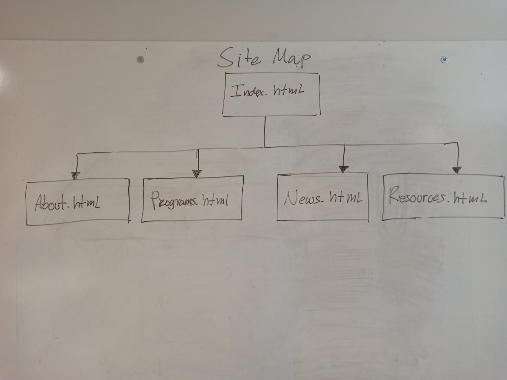
Index WireFrames
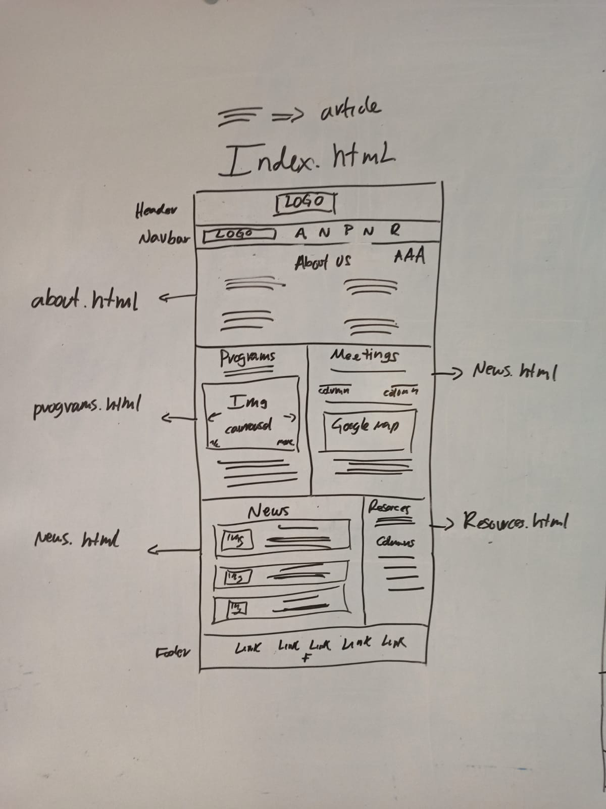
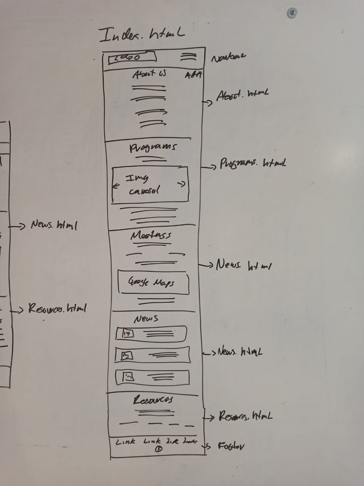
About WireFrames
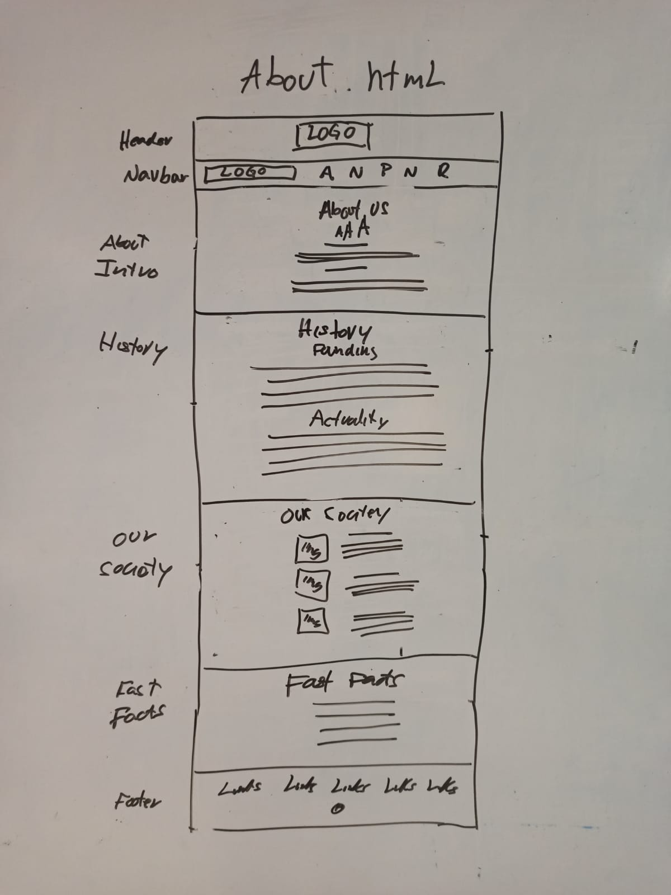
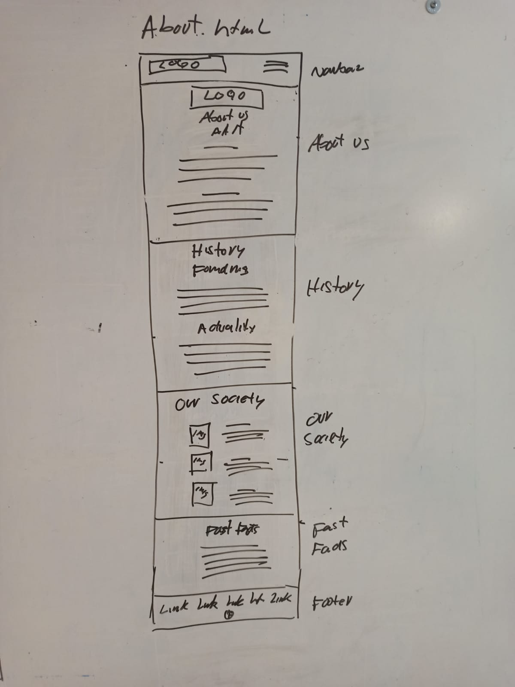
Programs WireFrames
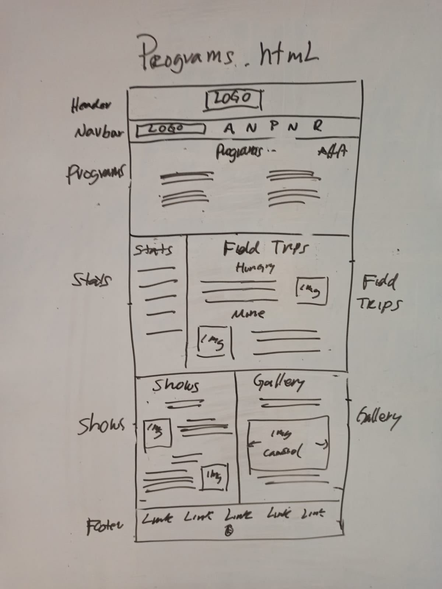
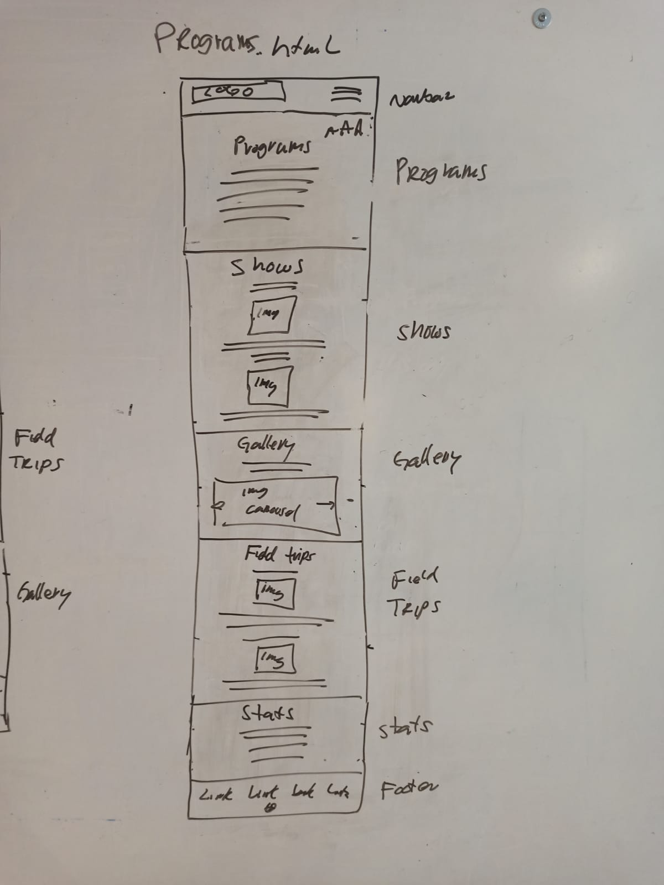
News WireFrames
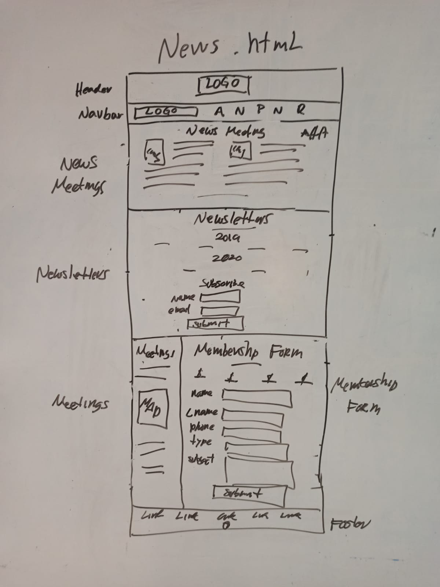
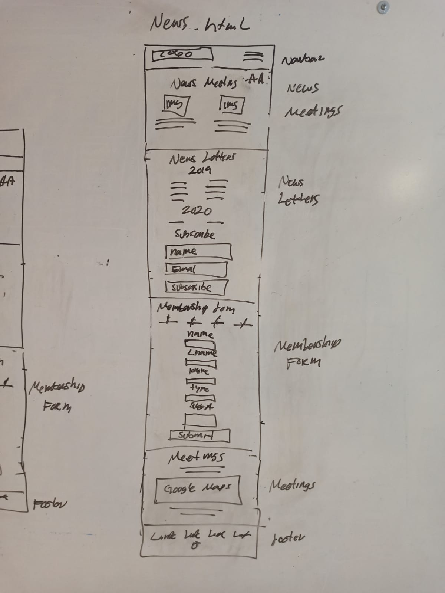
Resources WireFrames
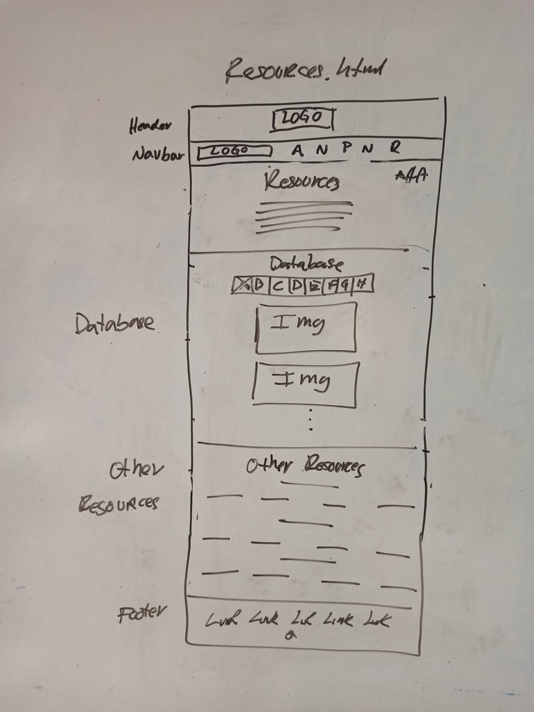
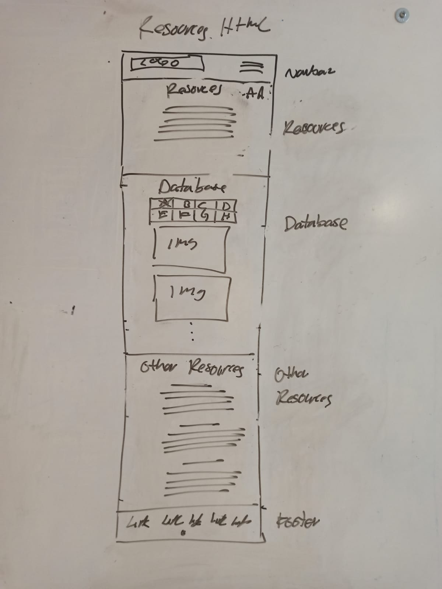
Index Mockups
 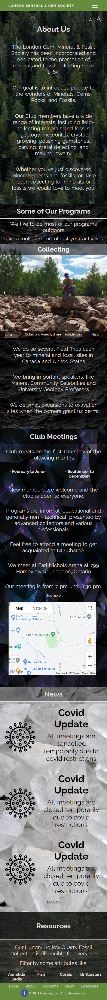
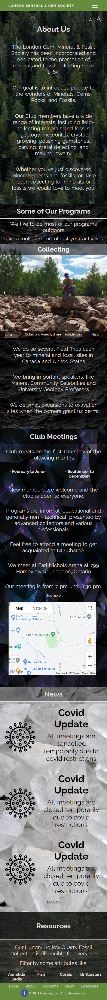
About Mockups
 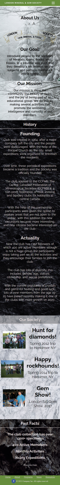
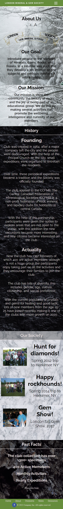
Programs Mockups


News Mockups
 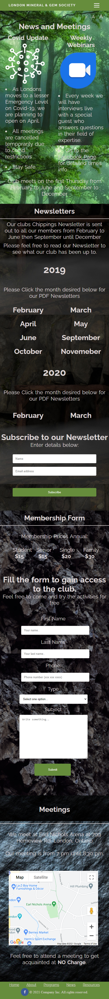
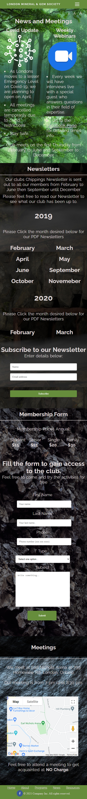
Resources Mockups
 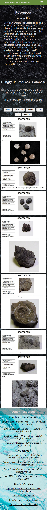
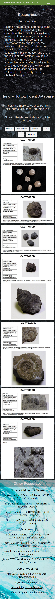
Thank you for your time, have a nice day :)